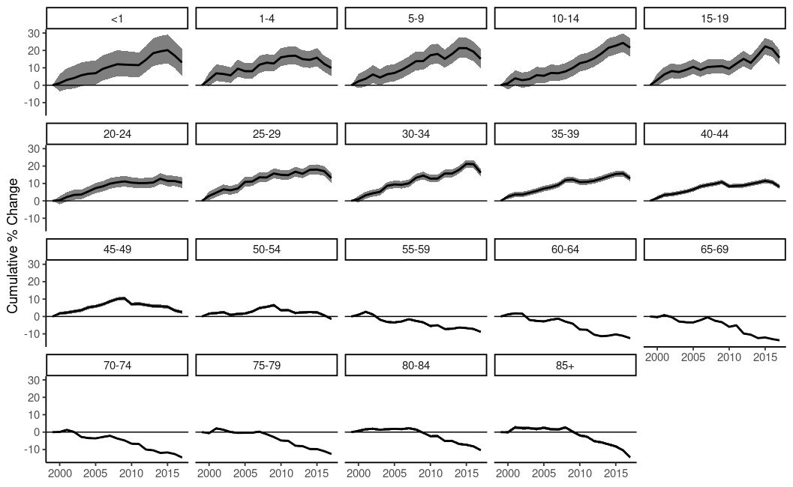

surveil: Public health surveillance

The surveil R package provides time series models for routine public health surveillance tasks: model time trends in mortality or disease incidence rates to make inferences about levels of risk, cumulative and period percent change, age-standardized rates, and health inequalities.
surveil is an interface to Stan, a state-of-the-art platform for Bayesian inference. For analysis of spatial health data see the geostan R package.
Vignettes
Review the package vignettes to get started:
-
vignette("surveil-demo"): An introduction to health modeling with surveil -
vignette("age-standardization"): How to age-standardize surveil model results and compare age-stratified populations -
vignette("surveil-mcmc"): A brief introduction to Markov chain Monte Carlo (MCMC) with surveil
Also see the online documentation.
Usage
Model time series data of mortality or disease incidence by loading the surveil package into R together with disease surveillance data. Tables exported from CDC WONDER are automatically in the correct format.
library(surveil)
library(knitr)
data(cancer)
kable(head(cancer),
booktabs = TRUE,
caption = "Table 1. A glimpse of cancer surveillance data")| Year | Age | Count | Population |
|---|---|---|---|
| 1999 | <1 | 866 | 3708753 |
| 1999 | 1-4 | 2959 | 14991152 |
| 1999 | 5-9 | 2226 | 20146188 |
| 1999 | 10-14 | 2447 | 19742631 |
| 1999 | 15-19 | 3875 | 19585857 |
| 1999 | 20-24 | 5969 | 18148795 |
Model trends in risk and easily view functions of risk estimates, such as cumulative percent change:
fit <- stan_rw(data = cancer,
time = Year,
group = Age)
fit_apc <- apc(fit)
plot(fit_apc, cumulative = TRUE)Cumulative percent change in US cancer incidence by age group